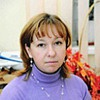
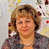
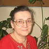
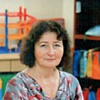

Дошкольное отделение центра образования № 1816
В 2015 году 85% первоклассников Центра образования № 1816 пришли из дошкольного отделения.
- 2-я Филёвская улица, 3к1
Воспитатели
Воспитатели, которых чаще всего благодарят родители (отзывы и профили сотрудников взяты с официального сайта школы):|

Воспитатель
Смирнова Елена Юрьевна
1 благодарность |

Воспитатель
Ахунзянова Марина Владимировна
1 благодарность |

Психолог
Федотова Евгения Николаевна
1 благодарность |
Логопед
Колосова Елена Юрьевна
1 благодарность |
|
Воспитатель
Нуреева Лариса Ивановна
1 благодарность |

Воспитатель
Кускова Ираида Павловна
1 благодарность |
 Воспитатель
Тюрина Наталья Владимировна
Воспитатель
Тюрина Наталья Владимировна
1 благодарность |
Отзывы
Данные собраны c официального сайта школы и через форму для отзывов.
Благодарю ИО директора школы №1816 Лактионову Ольгу Николаевну за профессиональный подход в решении возникающих вопросов у родителей, за сильный педагогический коллектив в дошкольной ступени ГБОУ г.Москвы центра образования №1816, создание благоприятных условий развития инициативы и творческих способностей детей.
Спасибо ИО руководителя структурного подразделения дошкольной ступени ГБОУ ЦО №1816 Смоковенко Екатерине Андреевне за охрану и укрепление физического здоровья детей и их эмоциональное благополучие. Выражаю искреннюю признательность: психологу Федотовой Евгении Николаевне за развитие внимания, памяти и мышления детей; логопеду Колосовой Елене Юрьевне за хорошую речь детей; Зуйковой Диане Викторовне за своевременную медицинскую помощь детям; музыкальному руководителю Скиба Анне Владимировне за интересные музыкальные занятия и праздники; учителю английского языка Челяк Алексею Михайловичу за прекрасное знакомство наших детей с английским языком.
От всего сердца хочу выразить благодарность нашим любимым воспитателям: Ираиде Павловне Кусковой и Ларисе Ивановне Нуреевой. В течение всего года они находили подход к каждому ребенку, искренне переживали за детей. В группе царила теплая и доброжелательная атмосфера. На занятиях воспитатели старались раскрыть способности и творческий потенциал каждого ребенка. Дети с нетерпением ждали наступление следующего дня.
Искренне благодарю всех педагогов дошкольной ступени за творческое развитие детей в различных кружках и на праздничных программах: Мустафину Софью Михайловну, Ахунзянову Марину Владимировну, Тюрину Наталью Владимировну, Смирнову Елену Юрьевну, Дегтяреву Ольгу Николаевну.
Спасибо ИО руководителя структурного подразделения дошкольной ступени ГБОУ ЦО №1816 Смоковенко Екатерине Андреевне за охрану и укрепление физического здоровья детей и их эмоциональное благополучие. Выражаю искреннюю признательность: психологу Федотовой Евгении Николаевне за развитие внимания, памяти и мышления детей; логопеду Колосовой Елене Юрьевне за хорошую речь детей; Зуйковой Диане Викторовне за своевременную медицинскую помощь детям; музыкальному руководителю Скиба Анне Владимировне за интересные музыкальные занятия и праздники; учителю английского языка Челяк Алексею Михайловичу за прекрасное знакомство наших детей с английским языком.
От всего сердца хочу выразить благодарность нашим любимым воспитателям: Ираиде Павловне Кусковой и Ларисе Ивановне Нуреевой. В течение всего года они находили подход к каждому ребенку, искренне переживали за детей. В группе царила теплая и доброжелательная атмосфера. На занятиях воспитатели старались раскрыть способности и творческий потенциал каждого ребенка. Дети с нетерпением ждали наступление следующего дня.
Искренне благодарю всех педагогов дошкольной ступени за творческое развитие детей в различных кружках и на праздничных программах: Мустафину Софью Михайловну, Ахунзянову Марину Владимировну, Тюрину Наталью Владимировну, Смирнову Елену Юрьевну, Дегтяреву Ольгу Николаевну.
Если вы нашли ошибку или неточность, пожалуйста, сообщите нам об этом.
Ученик, выпускник или родитель? Оставьте отзыв о детском саде.